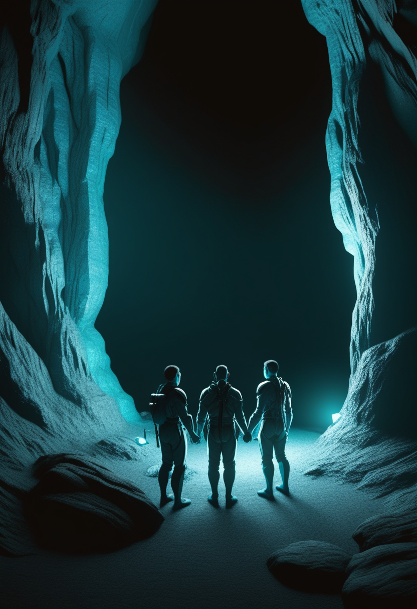
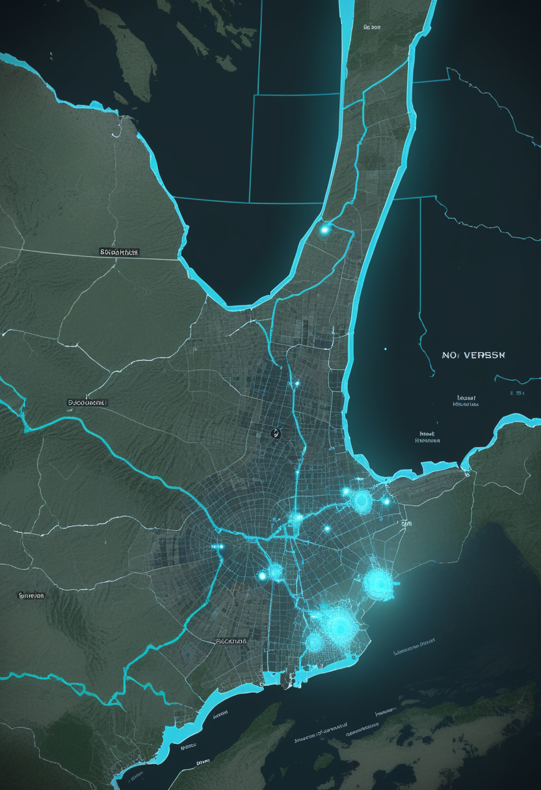
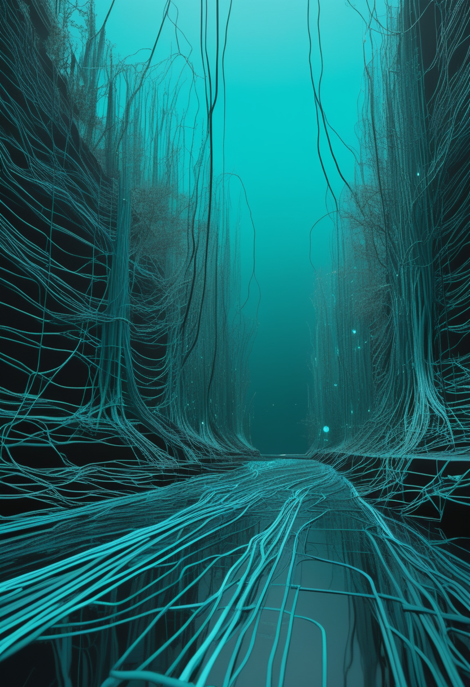
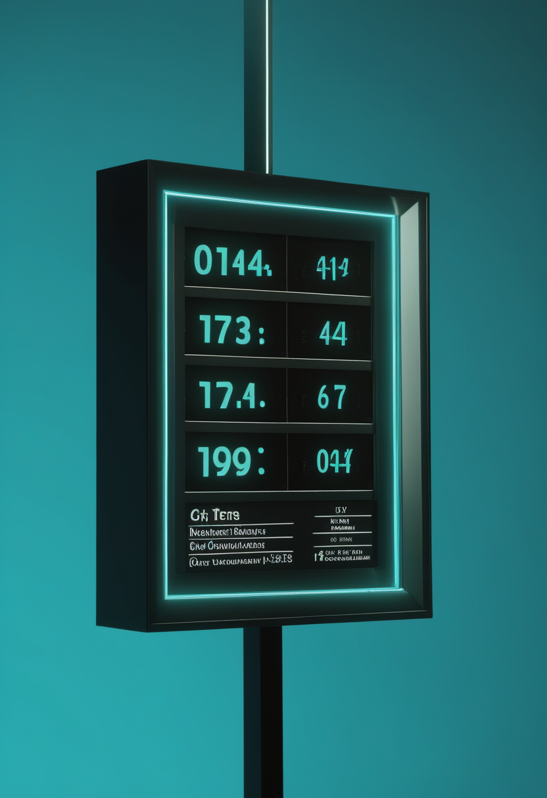
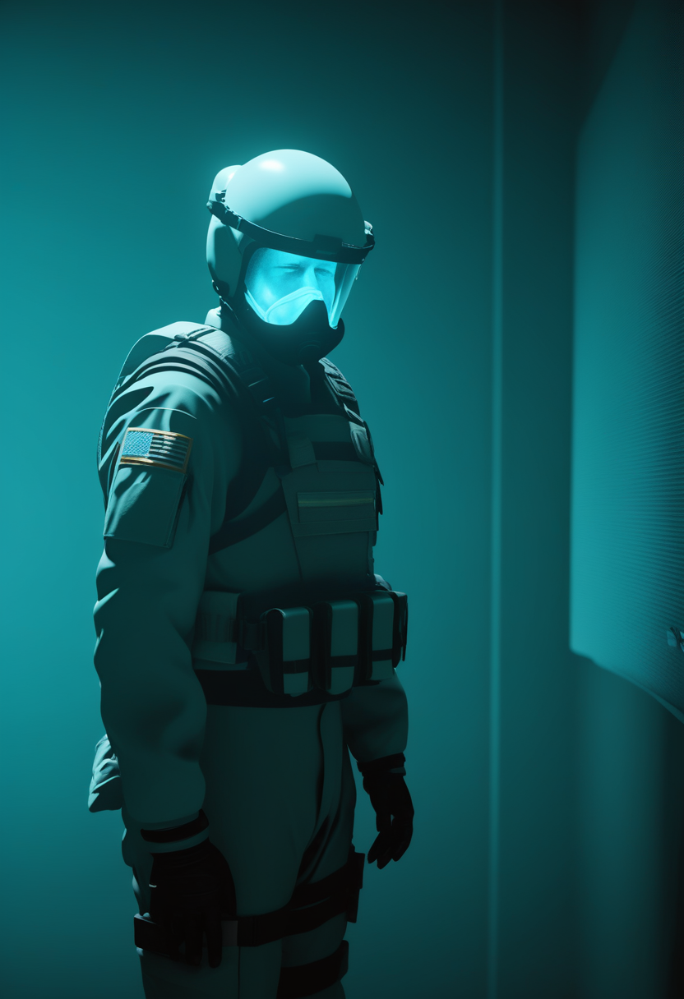
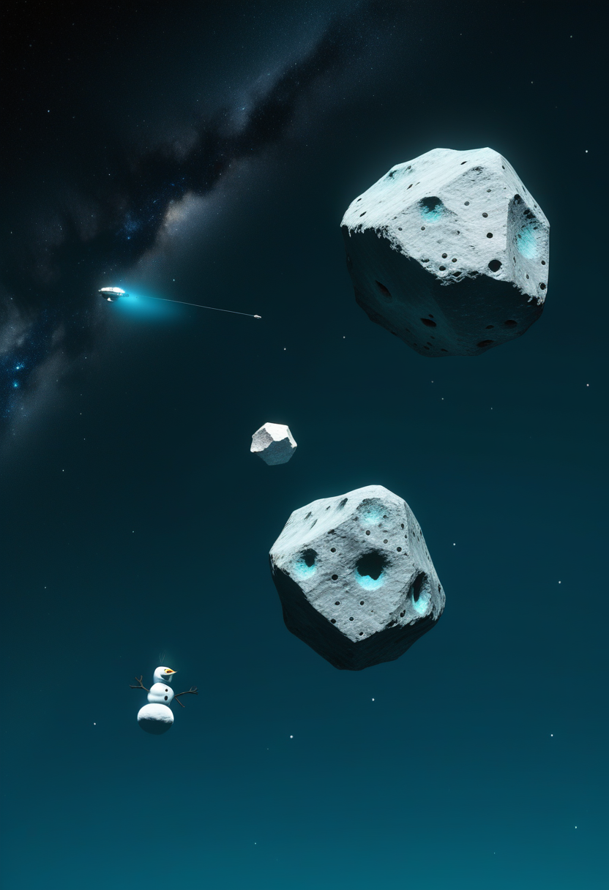

金曜日の便り。南トルコのユチャウズル第二洞窟の発掘調査から、ネアンデルタール人(7万7千〜5万9千年前)と現生人類(5万9千〜4万7千年前)が同じ場所で暮らした約2万年間、道具や生活様式、装飾用の貝殻の選び方までがほぼ途切れず続いていたことが明らかになった。二つの人類種の交代は断絶ではなく、一つの文化的連続体の中で起きていたという発見は、命・自由・基盤・畏敬・美という本紙のどの章にも通じる問いを静かに投げかけている。命の現場では、イングランドがSMA新生児スクリーニングの全国導入を発表し、発症前診断された乳児がリスジプラムで薬剤切り替えの「橋渡し」に成功したと報告された。自由の分野では、中国が1,000人超の脳波を同時収集する基盤技術を発表し、SynchronはApple公式のBCI規格に世界初対応、Neuralink最初の患者は28か月の記録でソフトウェアだけによる回復力を示した。基盤・公衆衛生では、DRCのエボラでAfrica CDCが死者1,031人を確認する一方、援助団体の隊員が感染・国外搬送される事態も続いている。畏敬の宇宙では、はやぶさ2が小惑星「鳥船」の雪だるま型の姿を捉え、NASAの探査車パーサヴィアランスは火星でフルマラソン相当の走行を達成、ベータ・ピクトリスdの発見は「撮影」でなく「大気の指紋」による分光検出だったと判明した。
トルコ・フランス・日本の国際研究チームが、南トルコのユチャウズル第二洞窟で行った発掘調査の成果をPNAS(米国科学アカデミー紀要)に発表した。同洞窟は約7万7千年前から5万9千年前までネアンデルタール人が、5万9千年前から4万7千年前までは現生人類(ホモ・サピエンス)が、順を追って居住していた層序を持つ。研究チームが人骨化石・動物骨や植物の遺存体・石器・持ち運ばれた貝殻(マニュポート)を総合的に分析した結果、居住者が入れ替わった前後で、生活の糧を得る手段や、装飾・儀礼に用いる特定の貝殻を選んで運ぶ習慣までが、大きな断絶なく引き継がれていたことが分かった。人類種の交代が、しばしば描かれるような「断絶」ではなく、一つの文化的連続体の中で起きていた可能性を示す証拠として注目されている。

イングランド保健当局は7月17日、脊髄性筋萎縮症(SMA)を対象とした新生児スクリーニング検査を全国で導入すると発表した。スコットランドでは既に2026年3月から検査が開始されており、イングランド国内に残る6か所の新生児スクリーニング検査施設は2027年10月から検査を開始する予定で、これにより英国で生まれる全ての新生児がSMA検査にアクセスできる体制が整うことになる。早期診断は、症状が現れる前の治療開始につながる重要な一歩と位置づけられている。
2026年米国神経学会(AAN)年次総会で発表された症例シリーズによると、新生児スクリーニングで発症前にSMAと診断された乳児2名が、一時的にオナセムノゲン アベパルボベク(ゾルゲンスマ)の投与ができない禁忌条件にあったため、代わりにリスジプラム(エブリスディ)による治療を開始し、禁忌が解消されるまでの「橋渡し」に成功したことが報告された。両名とも問題なく遺伝子治療へ移行できたとされ、発症前治療の選択肢が単線でなく複数の薬剤を組み合わせられる柔軟な体制になりつつあることを示す事例となった。
英国は制度としてのスクリーニング網を全国に広げ、臨床の現場では複数の薬剤を組み合わせて「治療の窓」を逃さない工夫が積み重ねられている。SMA治療は新薬の登場だけでなく、既存の手段を柔軟に組み合わせる運用面の成熟でも前進している。

中国国営放送CCTVの報道によると、中国の研究チームが、1,000人を超える参加者の脳波(EEG)信号を、異なる地域にまたがって同時に収集できる新型の計測機器を開発したと発表した。実現には二つの技術的な壁があったとされる。第一に機器を小型化しながら信号収集の精度を保つこと、第二にネットワーク遅延を克服し複数地域・複数機器間でミリ秒単位の時刻同期を達成し、異なる場所で得られた脳波信号を一つのデータとして統一的に解析できるようにすることだ。今後この大規模脳波データが蓄積されれば、AIの学習素材がテキスト・画像・映像といった間接的な情報にとどまらず、神経信号を通じて人間の認知状態を直接学習する道が開かれるとされている。
血管内アプローチのBCI「Stentrode」を手がけるSynchron社は、Appleが2025年5月13日に発表した「BCI Human Interface Device(BCI HID)」プロファイルに、BCI企業として世界で初めて正式対応したと発表した。Stentrodeを植込んだ患者は、身体の動きや音声を伴わず、思考だけでiPhone・iPad・Apple Vision Proを操作できるようになる。開頭手術を伴わない低侵襲の植込み手技により、米国・オーストラリアの臨床試験を通じてこれまでに10名の麻痺患者に植込みが行われており、ALS・脳卒中・脊髄損傷など運動機能障害を抱える人々への音声・手指操作フリーのデジタルアクセスを広げる狙いがある。
Neuralink社の最初の植込み患者ノーランド・アーバー氏が、あるロボティクス関連サミットで植込み後28か月間の経過を語った。手術から約3か月後、電極を支える極細スレッドの約85%が脳組織から後退し、計測できる信号が大きく減少するという課題に直面したが、追加手術ではなく信号処理・デコードアルゴリズムの改良というソフトウェア面の対応のみでこれを乗り越え、最終的には当初の性能を上回る操作精度を達成したという。改良版の設計では、より細い128本のスレッドに8電極ずつを配置し(総電極数1,024は維持)、組織への負担を抑える工夫が施されており、英国の新規患者は手術後数時間でパソコン操作を開始したと報告されている。
大規模脳波基盤(中国)・消費者デバイスとの統合(Synchron)・長期運用の耐障害性(Neuralink)という三つの異なる進展が、BCIを「植込めるかどうか」から「どう使い続けられるか」という次の段階へ押し進めている。

Africa CDC(アフリカ疾病予防管理センター)のジャン・カセヤ事務局長は7月22日、DRCのブンディブギョ型エボラによる死者が1,031人に達したと確認した。これは前号(7月20日時点、確定2,473例・死者999人)からさらに死者数が増えたことを意味する。WHOは今回の流行について、過去のどのエボラ流行よりも速いペースで拡大していると警告しており、紛争・地域社会の抵抗・対応の不均一さが感染拡大を後押ししていると分析している。一方、隣国ウガンダは最後の患者を退院させた7月16日を起点とする終息宣言に向けた42日間のカウントダウンを継続中で、7月24日時点で8日目を迎えている。

国際キリスト教系援助団体サマリタンズ・パースの隊員のうち、物流業務を担当していた1人が7月10日にブンディブギョウイルスの陽性反応を示し、7月13日にドイツ・フランクフルトの大学病院へ医療搬送された。WHOのテドロス事務局長は7月14日、患者の容体は安定していると述べた。その後さらに別の隊員1人も陽性となり同様に国外搬送されたほか、同団体の代表フランクリン・グラハム氏は7月18日、DRCへ派遣されていた米国人隊員7人が感染の可能性を受けケニアの施設で21日間の隔離下に置かれていることを明らかにした。現地では7月16日前後、輸血を拒否された患者が死亡した後にDRC国内の病院が襲撃を受け、患者や対応にあたる医療従事者が施設から避難する事態も起きており、WHOは武力衝突を理由に治療センターから医療従事者を退避させたと報じられている。
死者数の増加はなお続いているが、今回はその裏側で起きている「対応する側」の危機――援助隊員の感染・国外搬送、病院への襲撃――にも光が当たった。数字だけでは見えない、現場の脆弱さが浮かび上がっている。

JAXAの小惑星探査機「はやぶさ2」は7月5日18時30分(日本時間)、拡張ミッションの最初の探査対象である近地球型小惑星「鳥船」(2001 CC21、直径約450メートル)へのフライバイ(接近通過)を実施した。最接近距離は小惑星中心からわずか800メートル、通過速度は秒速約5キロメートルに達し、可視光カメラによる観測で、鳥船が細長く二つの塊が連なった「雪だるま型」の形状を持つことが明らかになった。今回の観測成果はThe Planetary Science Journal(米国天文学会発行)に論文として発表されている。
NASAの火星探査車「パーサヴィアランス」が、着陸から5年4か月・火星日で1,890ソル目にして、走行距離の累計がフルマラソン(42.195キロメートル、26.2マイル)に達したことが確認された。同じ距離を走破するのに11年2か月を要した先代の探査車「オポチュニティ」と比べ、大幅に短い期間での達成となる。この節目は、火星周回機「マーズ・リコネッサンス・オービター」搭載の高解像度カメラ「HiRISE」が6月13日に捉えた画像でも、赤い大地に残る蛇行する走行跡とともに小さな緑色の点として記録されている。
7/23号の続報 ― 7月15日に発表されたベータ・ピクトリスdの発見について、JWST(ジェイムズ・ウェッブ宇宙望遠鏡)側のチームが実際に用いた手法が、直接撮像ではなく分光観測による大気成分の検出だったことが改めて報じられた。JWSTの近赤外分光装置NIRSpecが検出したのは一酸化炭素の分子由来のスペクトル(いわば「大気の指紋」)であり、この指紋だけで惑星の存在・化学組成・軌道運動を確認できたことが特徴とされる。分光観測のみによる系外惑星の確認としては初めての事例とされ、ESO側チームによる超大型望遠鏡(VLT)の直接撮像とは異なる手法で同じ惑星に到達した点が、あらためて技術的な意義として強調されている。両論文はいずれも7月15日、The Astrophysical Journal Letters誌の同じ号に掲載された。
小惑星への接近、火星での走行距離、系外惑星の検出手法――今週の宇宙は、いずれも「どうやってそこまで辿り着いたか」という道のりの精度そのものが主役だった。
トルコ・フランス・日本の国際研究チームが南トルコのユチャウズル第二洞窟で行った発掘調査の成果をPNAS誌に発表した。同洞窟は約7万7千年前から5万9千年前までネアンデルタール人が、5万9千年前から4万7千年前までは現生人類が順を追って居住した層序を持つ。人骨化石・動物骨や植物の遺存体・石器・持ち運ばれた貝殻(マニュポート)を総合的に分析した結果、居住者が入れ替わる前後で生活の糧を得る手段や、装飾・儀礼に用いる特定の貝殻を選んで運ぶ習慣までがほぼ途切れずに引き継がれていたことが判明した。人類種の交代は断絶ではなく、一つの文化的連続体の中で起きていた可能性を示す証拠として位置づけられている。
27名の研究者による国際共著論文「Digital Twin AI: Opportunities and Challenges from Large Language Models to World Models」がarXivに公開された。論文は、物理システムを再現する「デジタルツイン」がAI技術の統合によって受動的なシミュレーションツールから知的で自律的なシステムへ進化する過程を、①物理ベース・AI手法によるモデリング、②リアルタイム同期によるデジタル化、③予測・異常検知・最適化による介入、④大規模言語モデルと知的エージェントによる自律管理、という4段階のフレームワークで整理した。医療・航空宇宙・製造業など11の応用領域を横断的にレビューし、生成AI技術がデジタルツインを推論・通信・シナリオ生成の能力を持つ「認知システム」へと変えつつあると考察する一方、スケーラビリティ・説明可能性・信頼性という課題も特定している。
4万7千年前に途切れた人類の交代劇が実は断絶ではなかったという発見と、受動的な模型が自律的な「考えるツイン」へ進化しつつあるという報告――過去を理解する営みと、新しい知性を設計する営みが、同じ週に並んで進んでいる。
2026年7月24日、南トルコの洞窟の地層が語ったのは、2万年という長い時間をかけて二つの人類が同じ文化を分け合っていたという静かな事実だった。断絶だと思われていた場所に、実は途切れない糸が通っていた。命の現場では、発症前の乳児が薬剤を乗り換えながら治療の窓を逃さず、自由の分野ではBCIが「植込む」段階から「使い続ける」段階へ移りつつある。DRCのエボラは死者1,031人という重い数字とともに、現場を支える人々自身の危機も表面化させた。それでも、はやぶさ2は小惑星の姿を鮮明に捉え、パーサヴィアランスは黙々と走り続けている。見えなかった連続性を見つける営みは、宇宙でも、人類の過去でも、今週も続いていた。
では、また明日の朝に。 — JaH